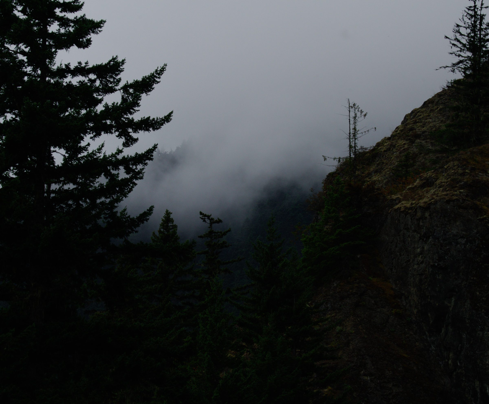
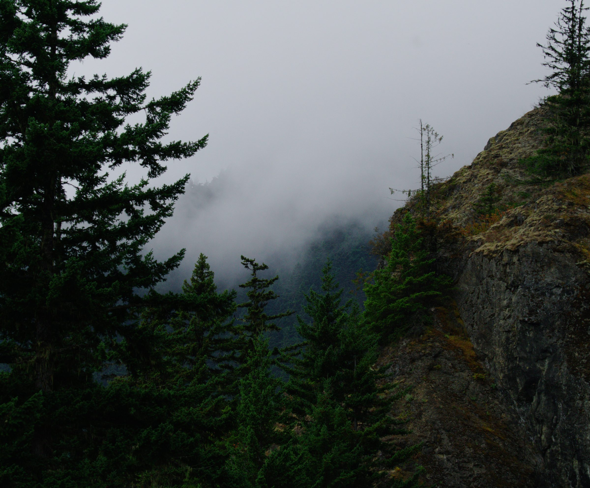
See every edit at full resolution.
A RAW editor for macOS, with no subscription and no account.
Seven panels around one photograph
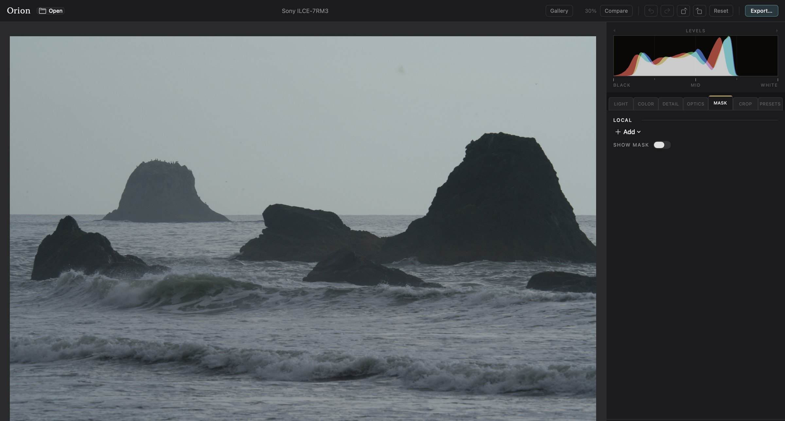
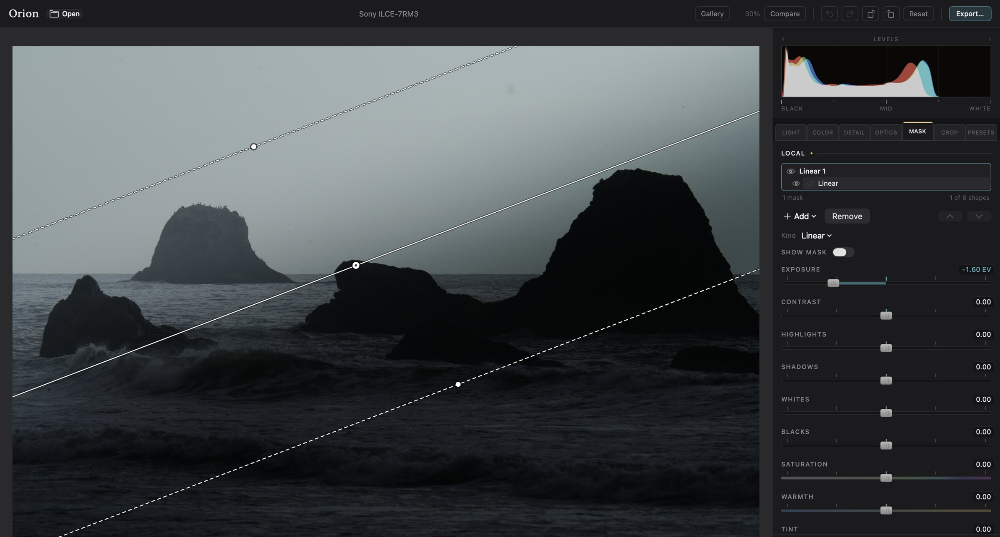
Under 20 milliseconds per slider move, at 42 megapixels
95th percentile over an exposure drag, on a 42 MP Sony A7R III raw file at full resolution, on a MacBook Air M4.
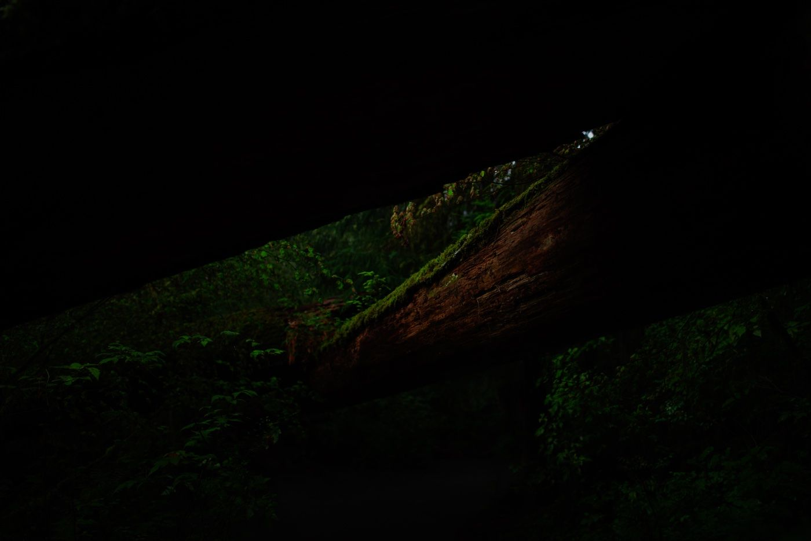
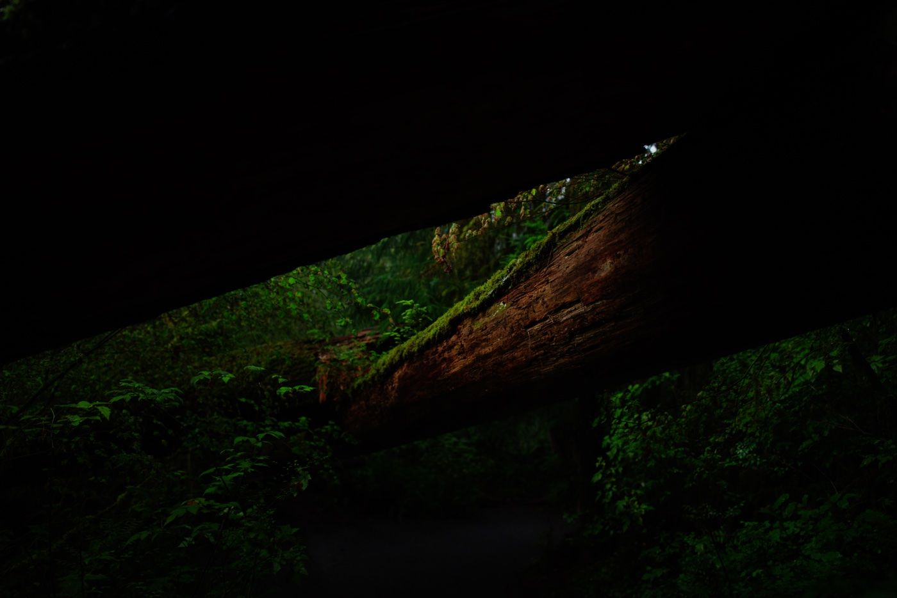
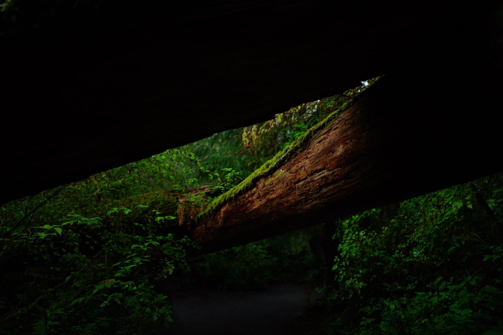
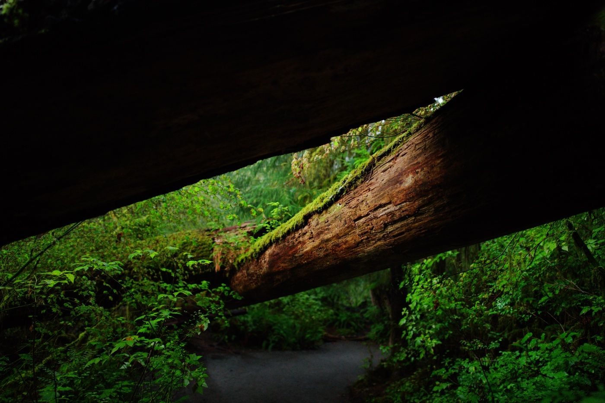
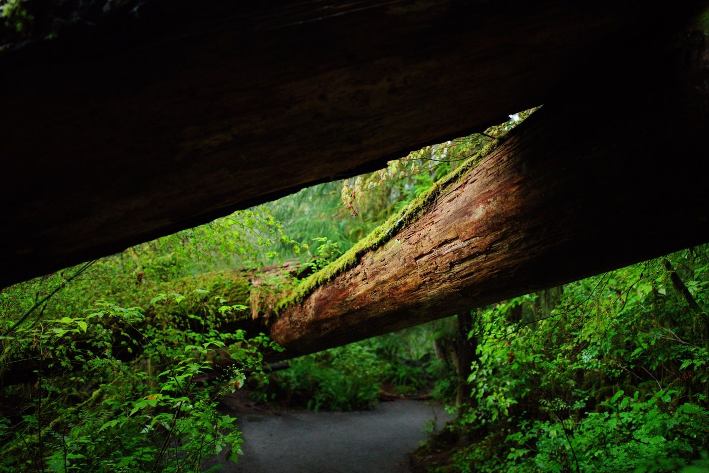
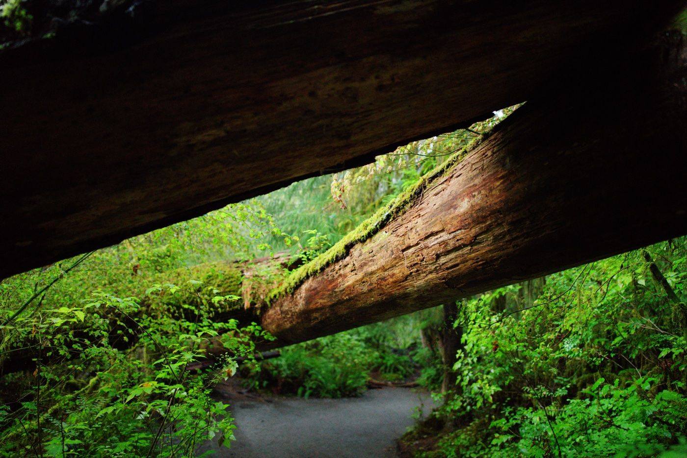
Exposure
Everything in the current build
Tone and color
- Exposure, contrast, highlights, shadows, whites, blacks
- White balance, color grading, tone curves
- Film looks from any
.cubefile - One-click auto-enhance
Detail and repair
- Haze removal, clarity, shadow recovery
- Noise reduction, sharpening, color mixer
- Spot and blemish removal
- Film grain, and a vignette you can dial in
Geometry
- Crop, straighten, rotate
- Distortion and vignetting for 1,558 lenses
- Perspective and keystone correction
Masking
- Gradient, radial, brush, brightness and color masks
- Selecting a subject, a person or a sky
- Masks combined (add, subtract, intersect) and feathered to real edges
Library
- Browsing a folder of 300 frames without waiting on it
- Saved versions of a photograph, to come back to later
- Presets, and copying settings between photos
Export
- Export at 8 or 16 bits, resized, sharpened for screen or print
- Export with your location stripped by default
Not yet
- Highlight reconstruction: the region fill runs and has a slider, but the detail transfer and the edge falloff are not built
- Fujifilm X-Trans sensors
- Windows
- An assistant that proposes edits for you to approve
Yours to keep
Orion never changes the RAW file. Your edits are saved next to it in a small sidecar, and nothing is uploaded.
DSC09787.ARW
DSC09787.xmp
Every filter cites its paper
-
Haze removalCVPR 2009
Single Image Haze Removal Using Dark Channel Prior
-
Local contrastSIGGRAPH 2011
Local Laplacian Filters: Edge-aware Image Processing with a Laplacian Pyramid
-
Shadow recoveryWACV 2020
An Extended Exposure Fusion and its Application to Single Image Contrast Enhancement
-
Film looksAdobe 2013
Cube LUT Specification, Version 1.0
-
Mask falloffACM TOG 2002
Improving Noise
-
Keystone correctionCUP 2004
Multiple View Geometry in Computer Vision
-
Blown highlightsPROCAMS 2012
Gradient Domain Color Restoration of Clipped Highlights
-
Vignette falloffJOSA 1945
The cos⁴ Law of Illumination
MCP-driven workflow
Coming next: Claude edits through Orion's MCP server, and nothing is saved until you approve.
- Please increase the contrast and give it a more dramatic look.
- orion - current_photo (MCP)⎿ DSC09787.ARW
- orion - describe_edits (MCP)⎿ Done
- orion - propose_edit (MCP)⎿ Proposal saved beside the photo
- It's darker and higher in contrast, with cooler light. The proposal is open in Orion for you to approve.
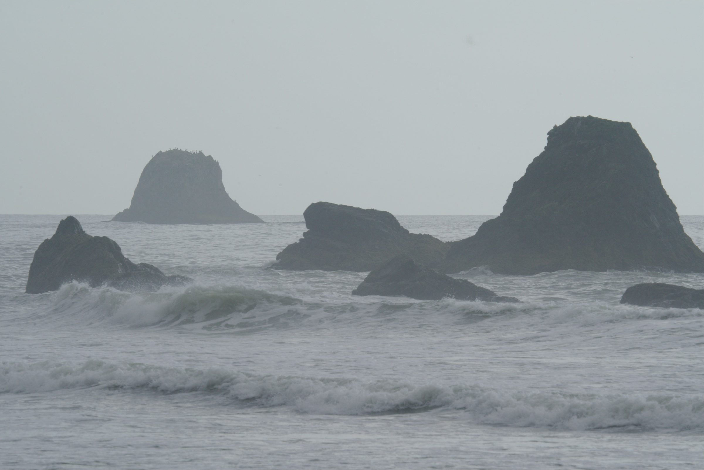
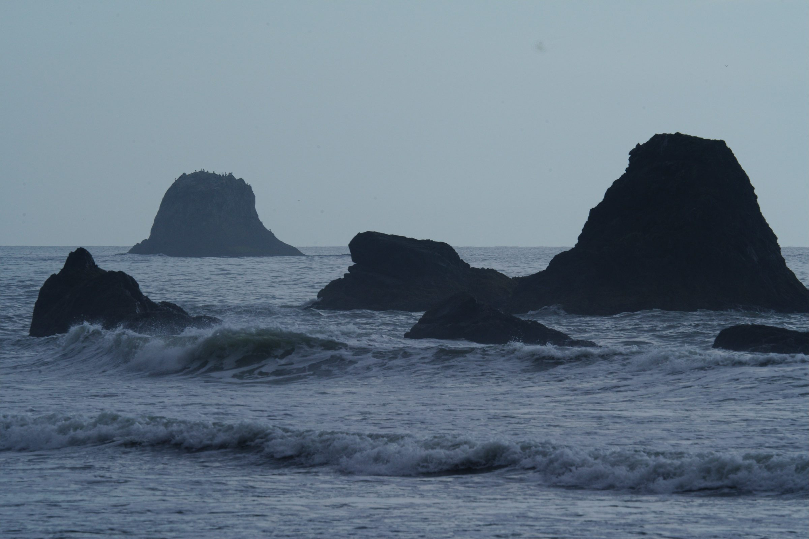
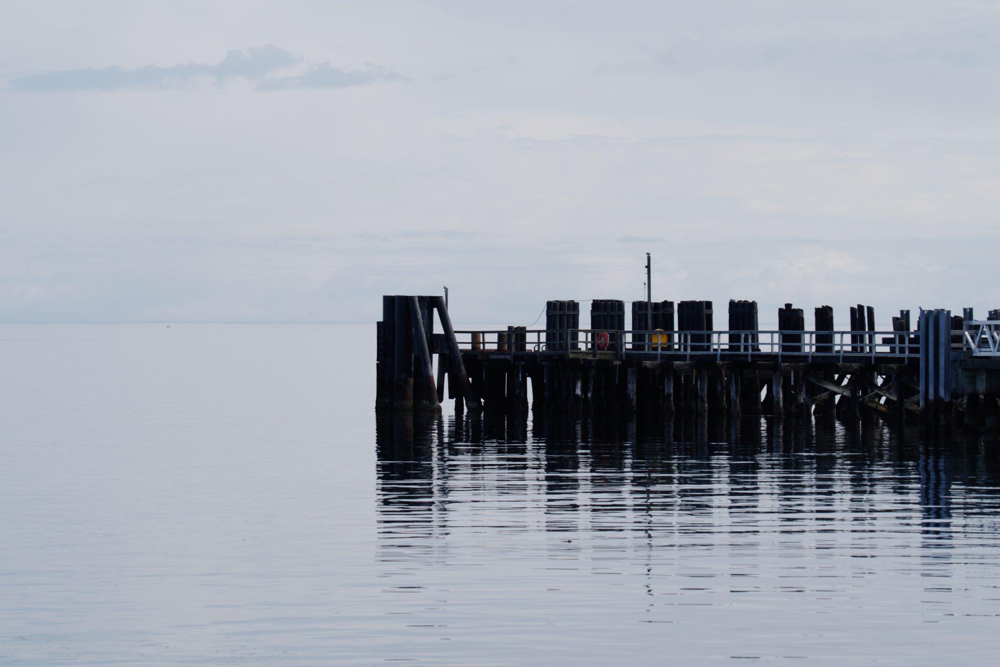
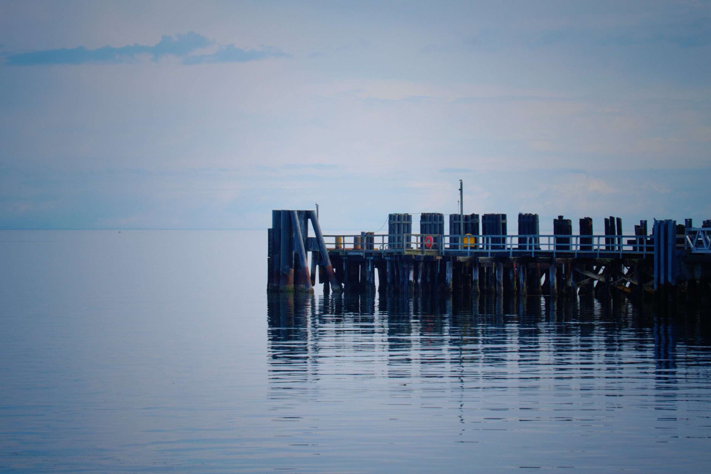